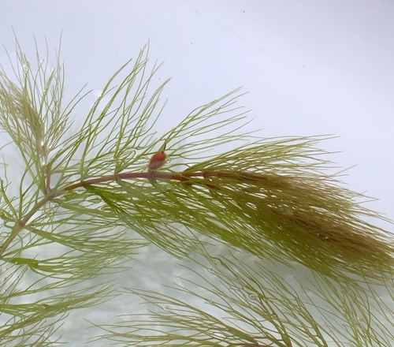

Ceratophyllaceae
Hornwort Family
Ceratophyllaceae, the Hornwort family, is a unique family comprising a single genus, Ceratophyllum, of rootless, submerged aquatic herbs found in freshwater habitats worldwide (cosmopolitan), including Oklahoma. Plants are easily recognized by their stems bearing whorls of stiff, dichotomously branched leaves. They reproduce via small, inconspicuous, unisexual flowers adapted for submerged pollination, producing small, hard achene fruits often bearing spines. Phylogenetically, Ceratophyllaceae occupies a crucial position in its own order, Ceratophyllales, often considered the sister group to all eudicots, representing an ancient angiosperm lineage.
Overview
Ceratophyllaceae is a small but globally distributed family containing only the genus Ceratophyllum, with about 6 recognized species (though taxonomy is complex due to high variability). These plants, commonly known as hornworts or coontails, are fully submerged freshwater aquatics, thriving in ponds, lakes, ditches, and slow-moving streams across temperate and tropical regions. They are notable for being entirely rootless throughout their lifecycle, either floating freely or loosely anchoring themselves with modified branches (rhizoids).
Morphologically, they are distinct. The brittle stems bear dense whorls of leaves that are repeatedly dichotomously branched into narrow, often stiff segments with marginal teeth, giving them a "horned" or bushy appearance. Reproduction occurs via small, inconspicuous, unisexual flowers borne in the leaf axils, adapted for pollination underwater (hydrophily). The fruit is a hard achene, often equipped with spines derived from the persistent style and perianth segments, aiding in dispersal or anchorage.
Perhaps most significantly, Ceratophyllaceae holds a unique and somewhat enigmatic position in angiosperm phylogeny. Placed in its own order, Ceratophyllales, molecular studies consistently place it as an early-diverging lineage near the base of the angiosperm tree, most commonly as the sister group to the entire Eudicot clade (or sometimes near Monocots or other basal lineages). This makes it critically important for understanding the evolutionary origins of major angiosperm groups and traits. Ecologically, hornworts contribute to oxygenating water bodies, provide habitat for invertebrates and fish, and are commonly used as oxygenating plants in aquariums.
Quick Facts
- Scientific Name: Ceratophyllaceae Gray
- Common Name: Hornwort family
- Number of Genera: 1 (Ceratophyllum)
- Number of Species: Approximately 6 (variable taxonomy)
- Distribution: Cosmopolitan (worldwide in freshwater)
- Evolutionary Group: Angiosperms - Order Ceratophyllales (likely Sister group to Eudicots)
Key Characteristics
Growth Form and Habit
Submerged, free-floating or loosely anchored, rootless, perennial aquatic herbs. Often forming dense, tangled masses underwater. Stems are slender, branched, and brittle. Lack vascular cambium and secondary growth. Often overwinter via dormant apical buds (turions) in colder climates.
Roots
True roots are completely absent at all stages of development. Anchorage, if present, occurs via specialized, often whitish, branched shoots (rhizoidal branches) that may penetrate the substrate.
Leaves
Leaves are arranged in distinct whorls of typically 5-12 per node along the stem. They are sessile (lacking petioles) and highly dissected, being 1-4 times dichotomously branched into linear or filiform segments. These segments are often stiff or brittle, usually bearing small teeth or spines along their margins. Leaves lack stomata and a distinct epidermis.
Inflorescence
Flowers are borne solitary or sometimes 2-3 together in the axils of the leaves, directly on the stem. They are sessile or nearly so.
Flowers
Flowers are small (a few mm), inconspicuous, actinomorphic (radially symmetrical), and unisexual (plants are monoecious, bearing separate male and female flowers on the same individual). They are adapted for pollination occurring entirely underwater (hydrophily).
- Perianth: Typically interpreted as a single whorl of 8-15 small, inconspicuous, greenish or brownish, somewhat translucent, bract-like segments. These segments are free or slightly fused at the base and often divided or fringed at the apex. Sometimes referred to as an involucre or tepals.
- Male Flowers (Staminate): Consist of numerous (typically 10-20, but up to 50+) stamens crowded on a short receptacle, surrounded by the perianth segments. Stamens have very short or absent filaments; anthers are linear, erect, basifixed, 2-locular, opening by longitudinal slits. The connective often extends into a short, sometimes colored, apical appendage. Anthers typically detach and float upwards or release pollen directly underwater.
- Female Flowers (Pistillate): Consist of a single pistil formed from a single carpel (monocarpous), surrounded by the perianth segments. The ovary is superior, ovoid or ellipsoid, 1-locular, containing a single, pendulous, orthotropous ovule. The style is single, persistent, elongate, slender and pointed (filiform), functioning directly as the stigma.
Fruits and Seeds
The fruit is a small (typically 4-6 mm long), hard, indehiscent, one-seeded nutlet or achene. It is usually ovoid or ellipsoid, with a smooth or sometimes warty surface. Characteristically, it bears a persistent terminal spine derived from the style, and often two or more spines near the base (derived from persistent perianth segments). The number and size of these spines are important for species identification. The seed completely fills the achene, lacks endosperm, and has a large, well-developed embryo with fleshy cotyledons.
Chemical Characteristics
Contain various phenolic compounds, including tannins and flavonoids. Lack features like ethereal oils or alkaloids commonly found in other groups. Their biochemistry reflects their aquatic habit and isolated phylogenetic position.
Field Identification
Ceratophyllaceae (Ceratophyllum species) are usually identified by their unique vegetative morphology in aquatic habitats.
Primary Identification Features
- Submerged Aquatic Habit: Plants grow entirely underwater in freshwater.
- Absence of True Roots: Plants are free-floating or loosely anchored by modified shoots.
- Whorled Leaves: Leaves arranged in distinct circles around the stem nodes.
- Dichotomously Branched Leaves: Each leaf repeatedly forks into two narrower segments.
- Stiff/Bristly Leaf Texture: Leaves often feel coarse or bristly due to marginal teeth (especially C. demersum).
Secondary Identification Features
- Brittle stems that fragment easily.
- Small, inconspicuous unisexual flowers in leaf axils (rarely seen or noticed).
- Characteristic spiny achene fruit (requires searching detritus or mature plants).
- Cosmopolitan distribution in suitable habitats (including Oklahoma lakes/ponds).
Seasonal Identification Tips (relevant to Norman, OK)
- Year-Round Presence: Ceratophyllum demersum is often present year-round in permanent water bodies, potentially forming dense subsurface beds.
- Fragmentation: Broken pieces are common and can aid identification.
- Fruiting: Fruits mature typically in late summer or fall but may be hard to find.
- Winter Condition: May survive as dormant turions (dense apical buds) near the substrate in colder climates, or persist vegetatively in milder winters or deeper water.
Common Confusion Points
- Myriophyllum (Water Milfoil): Also submerged with whorled, dissected leaves, but leaves are pinnately divided (feather-like), not dichotomous. Has roots. Flowers emergent.
- Utricularia (Bladderwort): Submerged dissected leaves, but these often bear tiny insectivorous bladders. Usually rootless. Flowers emergent, zygomorphic, often yellow or purple.
- Ranunculus subg. Batrachium (Water Crowfoot): Submerged leaves can be finely dissected (sometimes dichotomous-like), but often also has floating, broader leaves. Has roots. Flowers emergent, white with yellow center (buttercup-like).
- Chara and other Macroalgae (Stoneworts, etc.): Can form dense underwater masses and feel brittle/rough (Chara often calcified). However, they are algae, lack true stems/leaves/flowers, and have different cellular structure and reproductive organs (oogonia/antheridia).
Field Guide Quick Reference
Look For:
- Submerged aquatic herb
- No Roots
- Stems with Whorls of leaves
- Leaves Dichotomously Branched
- Leaves often stiff/bristly
- Small, hard Achene fruit (often spiny)
Key Variations (Species Level):
- Number of dichotomous divisions per leaf
- Leaf segment stiffness/flexibility
- Presence/absence and number of marginal teeth
- Number and length of spines on achene fruit
Notable Examples
The family Ceratophyllaceae consists of a single genus, Ceratophyllum, with only a few widely recognized species that are notoriously variable.

Ceratophyllum demersum
Common Hornwort, Coontail
The most common and widespread species, found globally including in Oklahoma. Typically has relatively stiff leaves that are branched 1-2 times into linear segments with noticeable marginal teeth. Often forms dense "coontail-like" masses. Fruit usually has 3 prominent spines (one apical, two basal). Very popular aquarium plant due to its hardiness and oxygenating ability.

Ceratophyllum submersum
Soft Hornwort
Another widespread species, though generally less common than C. demersum. Distinguished by its typically softer, more delicate leaves that are branched more times (usually 3-4) into finer segments, often lacking conspicuous marginal teeth. Fruit morphology is variable, often lacking basal spines or having more numerous, smaller spines.

Ceratophyllum Leaf Structure
Whorled, Dichotomous Leaves
A key feature of Ceratophyllum is the arrangement of leaves in whorls around the stem nodes. Each individual leaf then branches dichotomously (forks into two equal parts) one or more times, resulting in a complex, finely divided appearance. The segments often bear small teeth.

Ceratophyllum Fruit
Hornwort Achene
The fruit is a small, hard achene. It characteristically features a persistent apical spine formed from the style. Depending on the species and variety, it may also possess two or more spines near the base. These spines can aid in dispersal or anchoring in sediment.
Phylogeny and Classification
Ceratophyllaceae occupies a unique and critically important position in the angiosperm phylogeny. It is placed in its own distinct order, Ceratophyllales. Extensive molecular phylogenetic research, utilizing data from chloroplast, mitochondrial, and nuclear genomes, consistently places Ceratophyllales as one of the earliest diverging lineages after the "ANITA grade" (Amborella, Nymphaeales, Austrobaileyales).
The most widely supported current hypothesis places Ceratophyllales as the sister group to all living Eudicots. This means that the lineage leading to Ceratophyllum diverged after the split leading to Monocots and before the massive radiation of the Eudicot clade (which includes ~75% of all angiosperm species). While some alternative placements (e.g., sister to Monocots, or near Chloranthaceae) have occasionally been suggested based on certain datasets or morphological interpretations, the sister-to-Eudicots position is prevalent in recent large-scale analyses. This placement makes Ceratophyllaceae essential for comparative studies aimed at understanding the origin and early evolution of eudicot characteristics.
Position in Plant Phylogeny
- Kingdom: Plantae
- Clade: Angiosperms (Flowering plants)
- Order: Ceratophyllales
- Family: Ceratophyllaceae
- (Phylogenetic Position: Typically considered Sister group to Eudicots)
Evolutionary Significance
Ceratophyllaceae (Ceratophyllum) is profoundly important for understanding angiosperm evolution:
- Ancient Lineage: Represents a very old lineage that diverged near the base of the angiosperm tree, possibly over 125 million years ago.
- Sister Group to Eudicots: Its position provides a crucial reference point (outgroup) for studying the origin and evolution of key eudicot traits (like tricolpate pollen, flower part numbers, specific gene families).
- Evolution of Aquatic Habit: Shows an independent and early transition to a fully submerged aquatic lifestyle within angiosperms, accompanied by significant morphological modifications (loss of roots, reduced vascular tissue, dissected leaves, hydrophily).
- Morphological Simplification/Specialization: Exhibits extreme reduction in features like roots, stomata, and perianth, alongside specialization for aquatic life.
- Phylogenetic Enigma: Its unique combination of features made its phylogenetic placement difficult based on morphology alone, highlighting the power of molecular data.